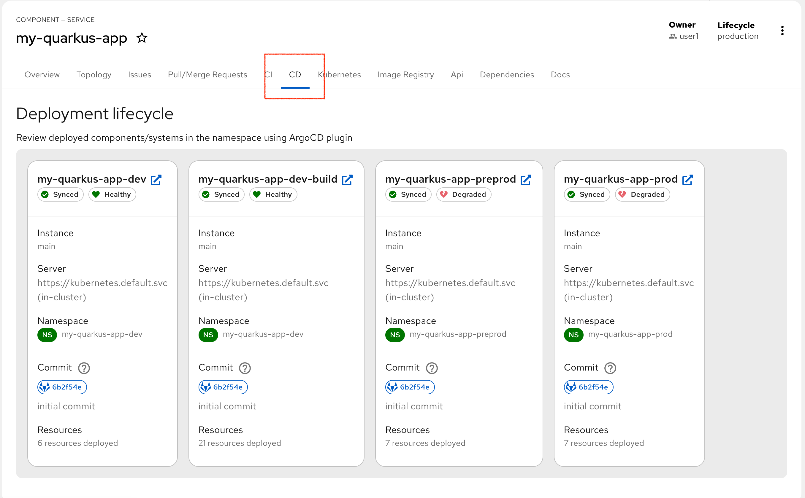
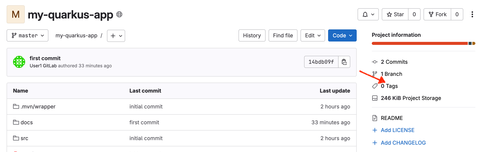
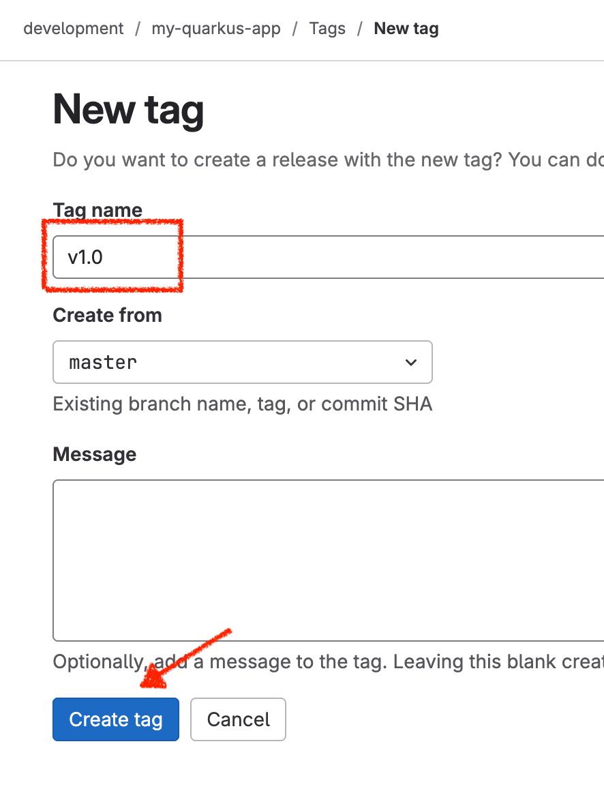
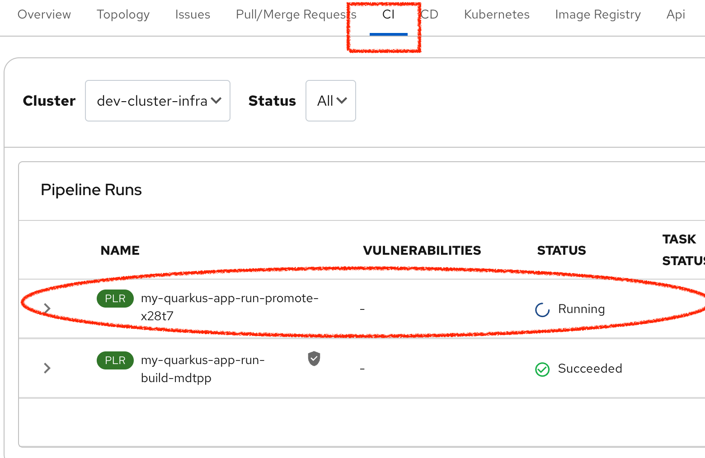
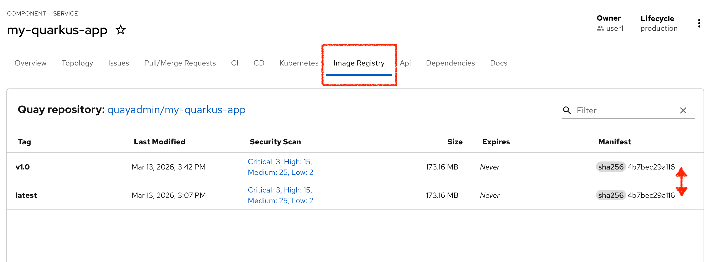
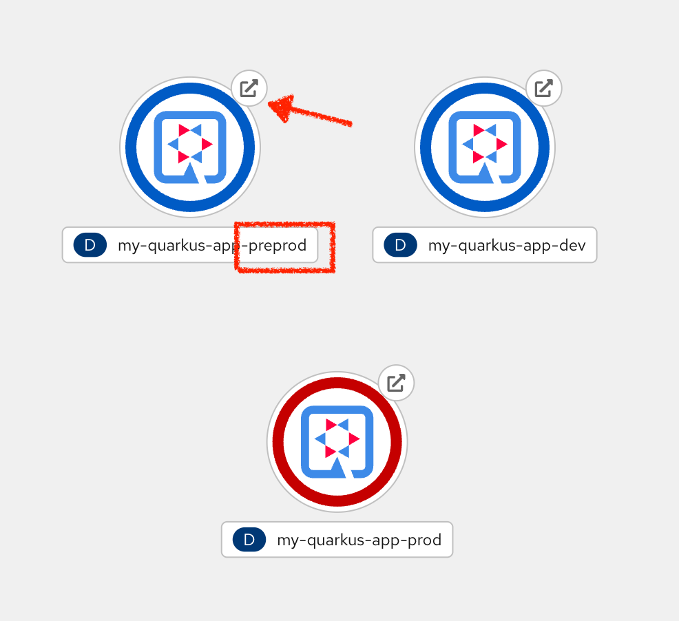
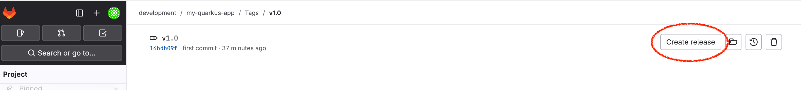
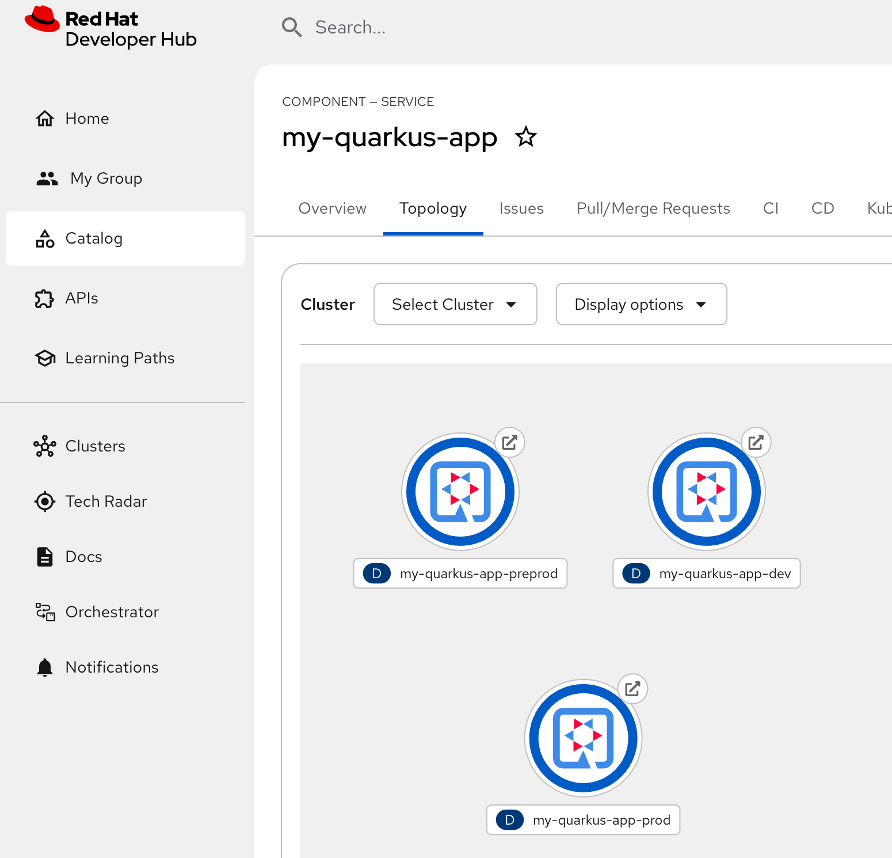

Promoting the application
As mentioned before, the application build and promotion is merely a feature of the chosen template and the webhooks associated with the GitLab repos and the pipelines created.
If we switch to our CD tab we can see the ArgoCD sync status. It shows we have built and deploy our application to dev, but we have pre-prod and prod still to complete. These ArgoCD tasks will struggle to sync until we promote our dev image in Quay.

Like before, we use a pipeline to do this promotion, and like before it requires a Git change to start the process.
Tagging the Repo
This time we will go into our source repo and add a Git tag to signify the change. As before a webhook will launch the pipeline that promotes the image.
Login to GitLab
Login in to GitLab using this link: GitLab
Use the credentials user1 and the password %ADMIN_PASSWORD% to login. However, the likelihood is that your login to RHDH will provide SSO cookies to access GitLab without re-authenticating.

You can see the two new repos created from the template that apply to the quarkus application build. One repo is the source code my-quarkus-app the second contains the GitOps instructions my-quarkus-app-gitops.
Navigate into the my-quarkus-app and then select the Tags

Click on the New Tag button and add a tag v1.0 as the name and click Create tag.

This should trigger the promotion pipeline shown below (back in Developer Hub)

Checking the promoted image
If we switch to the Image Registry tab we can see the changes made by the pipeline. There are now two images available, one for dev and the other for pre-prod. Note that the Manifest value is the same, so this is the same container image, just promoted into place.

As a side issue we can also see that Quay has performed CVE scanning on our built image, and rather embarrassingly its full of issues. Now fixing that is an challenge for a different lab, but good to see the whole system is trying to help us build healthy artefacts.
We can also check our Topology view to see whether our pods are running. As before we have dev, but now an additional pre-prod application is running, and it too should respond to its Route link to show the Quarkus application screen.

Promoting to production
Again, a webhook is in place to promote to production via a pipeline which will pretty much repeat the same steps again. So this is pretty much the same.
To invoke this, return to Gitlab, where you created the tag, and the option to create a release is already available.

Click the Create Release button, then add a Release title into the form, like "New Release"
Now click the blue Create release button at the bottom of the GitLab form.
Back in Developer Hub, check the CI tab, you should now see a 3rd pipeline running to promote to production. This pipeline is pretty fast, so now check the Image Registry tab to see whether the tagging has occurred.
Finally, check the Topology tab to see all 3 pods running (in blue)
